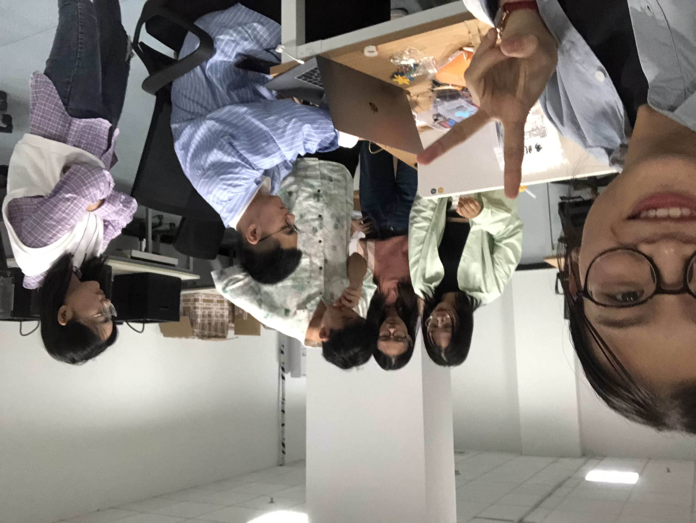
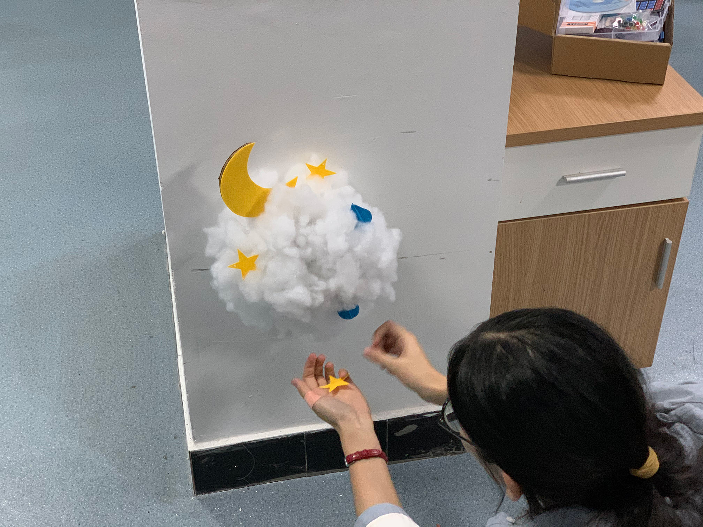

On the evening of October 14, after the conference, we met up in a professional classroom to start feeding the mosquitoes, no, doing our homework.
After arriving at the classroom, we started to do our "clouds" after a simple exchange with other groups.
First, we connected the wires, according to the circuit diagram drawn in advance by Zhang Chao will be small lights, photoresistors and other devices assembly.

Then test the code program to see if it works the way we want it to.
#define LEDA 2
#define LEDB 3
#define LEDC 4Servo myservo; // create servo object to control a servoint pos = 0; // variable to store the servo position// 设定SR04连接的Arduino引脚
const int TrigPin = 8;
const int EchoPin = 9;
float distance;int intensity = 0;
int state = 0;void setup() {
// put your setup code here, to run once: Serial.begin(9600); pinMode(CDS, INPUT);
pinMode(LEDA, OUTPUT);
pinMode(LEDB, OUTPUT);
pinMode(LEDC, OUTPUT);
pinMode(TrigPin, OUTPUT);
// 要检测引脚上输入的脉冲宽度，需要先设置为输入状态
pinMode(EchoPin, INPUT);
Serial.println("Ultrasonic sensor:"); myservo.attach(10); // attaches the servo on pin 9 to the servo object
}void loop() {
// put your main code here, to run repeatedly: // 产生一个10us的高脉冲去触发TrigPin
digitalWrite(TrigPin, LOW);
delayMicroseconds(2);
digitalWrite(TrigPin, HIGH);
delayMicroseconds(10);
digitalWrite(TrigPin, LOW);
// 检测脉冲宽度，并计算出距离
distance = pulseIn(EchoPin, HIGH) / 58.00;
Serial.print(distance);
Serial.print("cm");
Serial.println();
delay(1000); if (distance < 50) {
for (int i = 0; i <= 3; i += 1) {
for (pos = 0; pos <= 60; pos += 1) { // goes from 0 degrees to 180 degrees
// in steps of 1 degree
myservo.write(pos); // tell servo to go to position in variable 'pos'
delay(10); // waits 15ms for the servo to reach the position
}
for (pos = 60; pos >= 0; pos -= 1) { // goes from 180 degrees to 0 degrees
myservo.write(pos); // tell servo to go to position in variable 'pos'
delay(10); // waits 15ms for the servo to reach the position
}
}
} intensity = analogRead(CDS) - 900;
Serial.print("intensity = ");
Serial.println(intensity); if (intensity > 100) {
if (state == 0) {
digitalWrite(LEDA, HIGH);
delay(1000);
digitalWrite(LEDB, HIGH);
delay(2000);
digitalWrite(LEDC, HIGH);
} else {
digitalWrite(LEDA, HIGH);
digitalWrite(LEDB, HIGH);
digitalWrite(LEDC, HIGH);
} if (state == 0) {
state = 1 - state;
}
} else if (intensity < 100) {
digitalWrite(LEDA, LOW);
digitalWrite(LEDB, LOW);
digitalWrite(LEDC, LOW);
if (state == 1) {
state = 1 - state;
}
}
}
Since the D&L team was also working on clouds, we wanted to differentiate, so we started brainstorming again about what features we could add. We focused on the imagery of "the moon rising from the clouds" and adopted Zhang Chao's idea of using infrared distance sensors and servos to make the moon sway when people get close to it. Later, when you pat the clouds, the moon will shake its body to greet you.
The work of pasting cotton is very dangerous, the temperature of the glue gun is very high, if you are not careful, you will be burned ...... Zhang Chao, Weilin, Ming Yue, Qiao Qiao in the installation of the cloud light, Zhang You, Da Shuang in the other side of the editing video, the two lines are carried out in an orderly manner.

In the end, under the pressure of both DDL and time, we were able to complete the assignment with amazing efficiency.
Here's our video showcase 👇